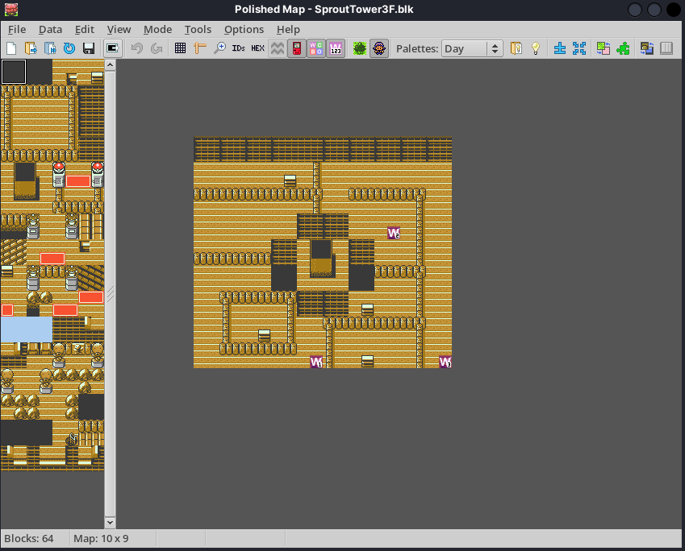

Literally Notepad with extras
With a new age of disassembly-based ROM hacking, we need new tools to do the job.
Since we're just operating on text files, you don't need a whole lot of tools, especially tens of them all written in Visual Basic. But a few do help.